Computer Engineering · SJSU
I'm Oscar Arroyo, a Computer Engineering student focused on hardware design — FPGA development, embedded systems, and PCB layout. I like taking a project from LTSpice simulation, through RTL and schematic capture, to a board I've soldered and tested myself.
// 01 — Toolkit
// 02 — Selected Work
CMPE 110 · Full PCB lifecycle, from LTSpice to a soldered board
Designed, simulated, and manufactured a two-channel audio amplifier PCB built around the LM386 low-voltage op-amp, taking it from a theoretical circuit to a working, soldered board with measured output.
| Role | Circuit design, schematic capture, layout, and assembly (team of 3, with Alex Chavez and Zemarai Rokai) |
| Stack | LTSpice simulation → KiCad schematic capture → footprint assignment → PCB layout & routing → Gerber/BOM export |
| Verification | Electrical Rules Check (0 errors/warnings), Gerber viewer inspection, oscilloscope waveform capture at 15/20/25 kHz |
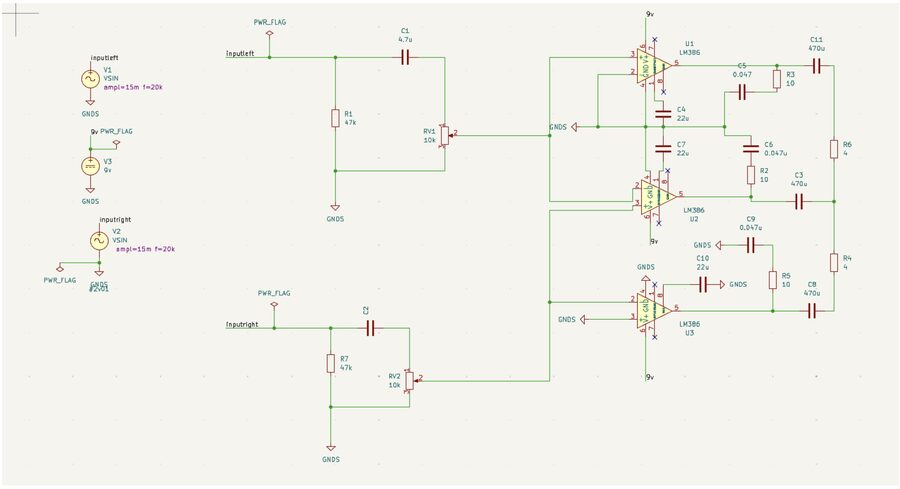
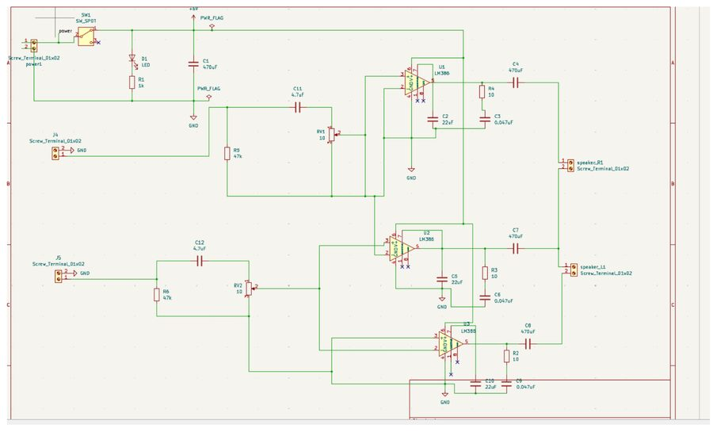
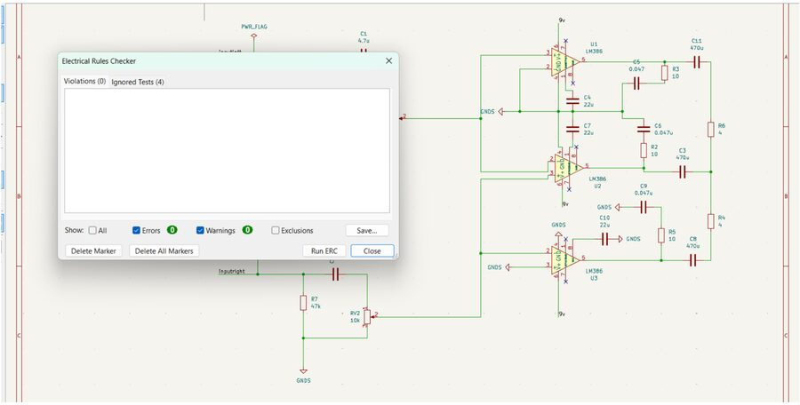
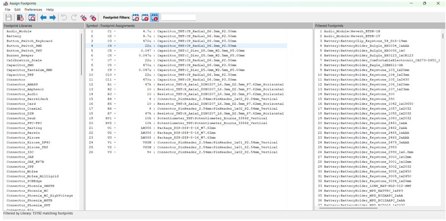
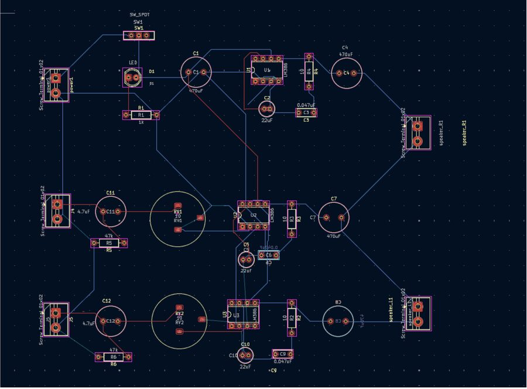
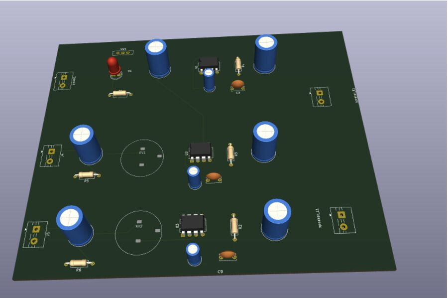
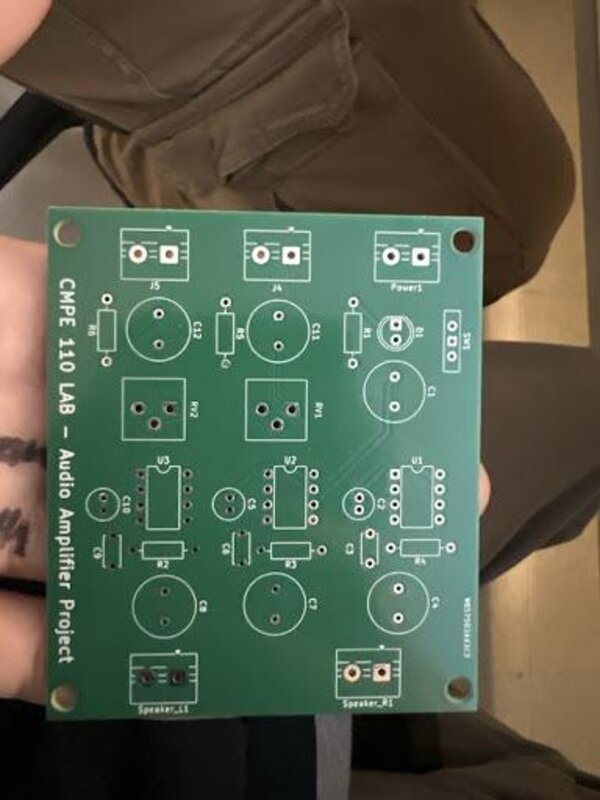
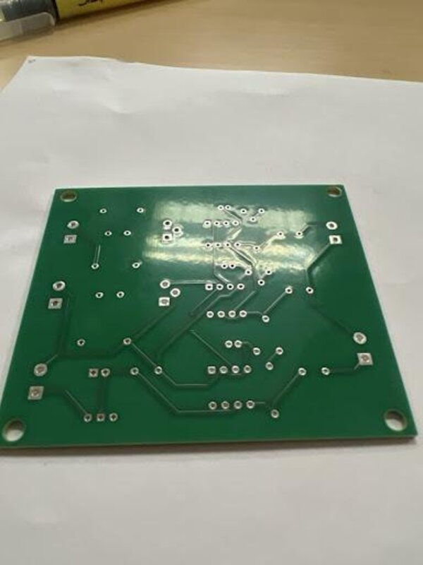
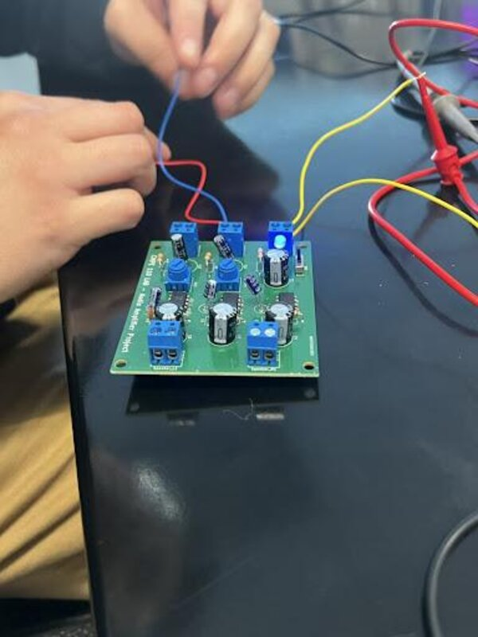
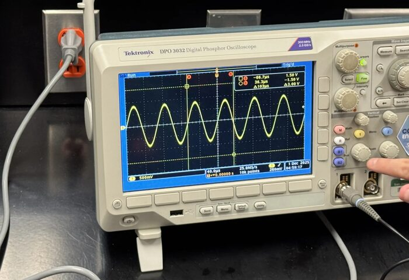
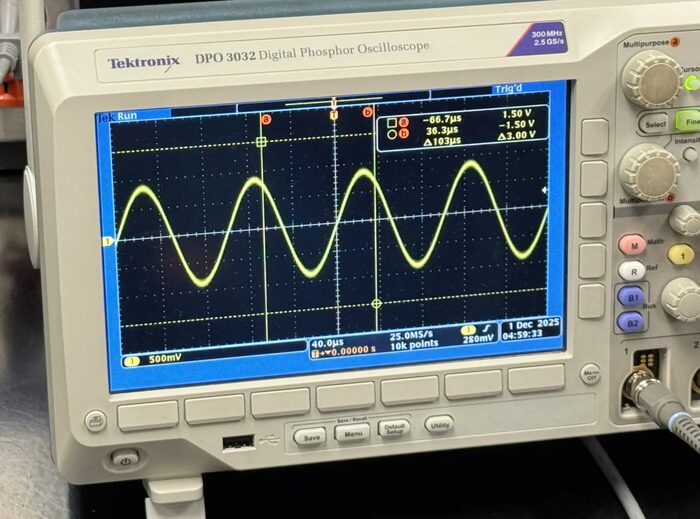
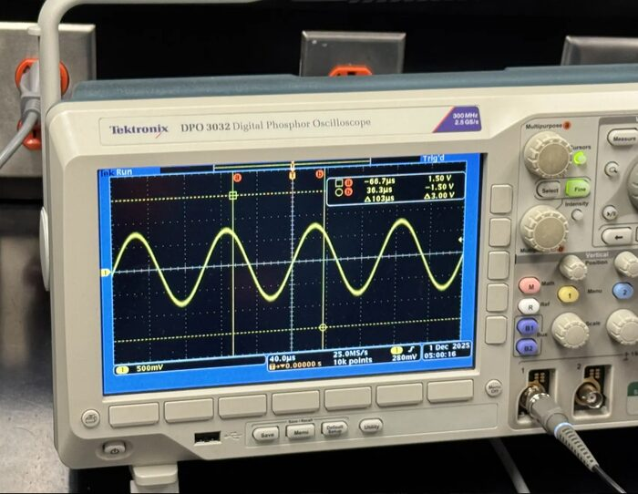
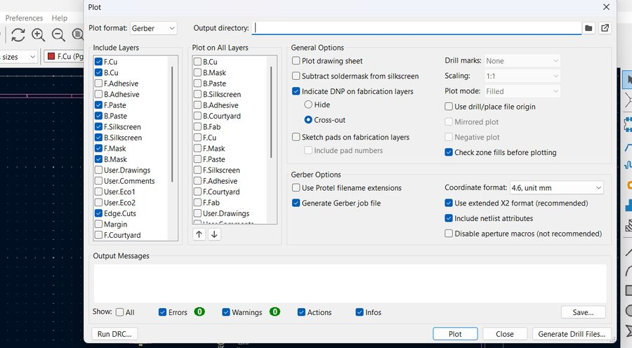
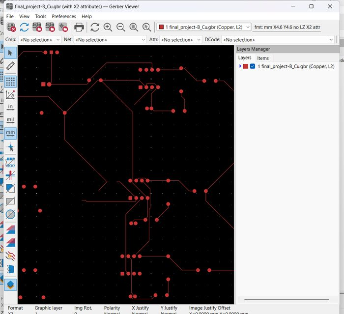
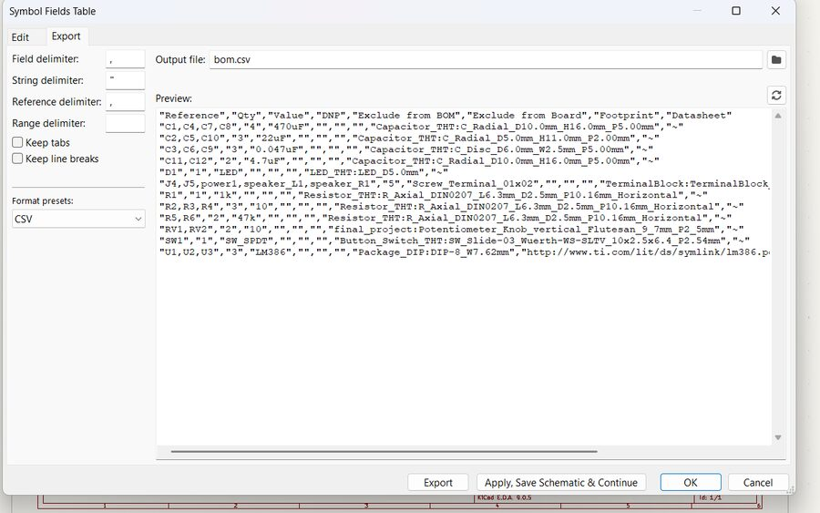
CMPE 125 · Moore machine design in Verilog on a Basys 3 FPGA
Designed a Moore-machine finite state machine that tracks inserted coins (nickels, dimes, quarters) toward a 25-cent soda, dispensing and returning correct change across 10 reachable states — implemented and verified on real FPGA hardware.
| Logic | 10-state Moore FSM (S0–S9) tracking running coin totals in 5¢ increments, with dedicated dispense states for exact and over-payment |
| Inputs / Outputs | Debounced, edge-detected coin switches (nickel/dime/quarter) → dispense, returnNickel, returnDime, returnTwoDimes signals + 4-bit state LEDs |
| Verification | Custom testbench with binary test-vector file covering 10 payment scenarios, plus live hardware validation on the Basys 3 |
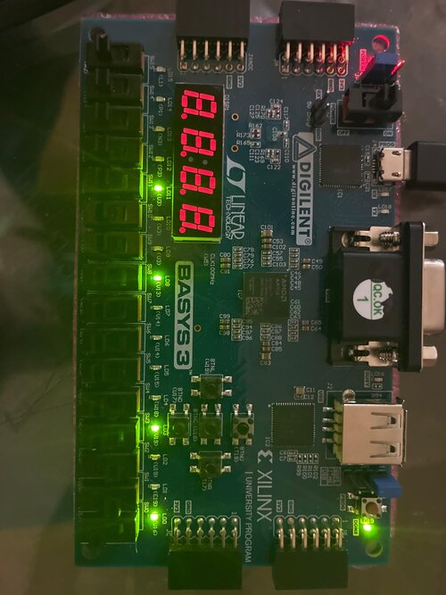
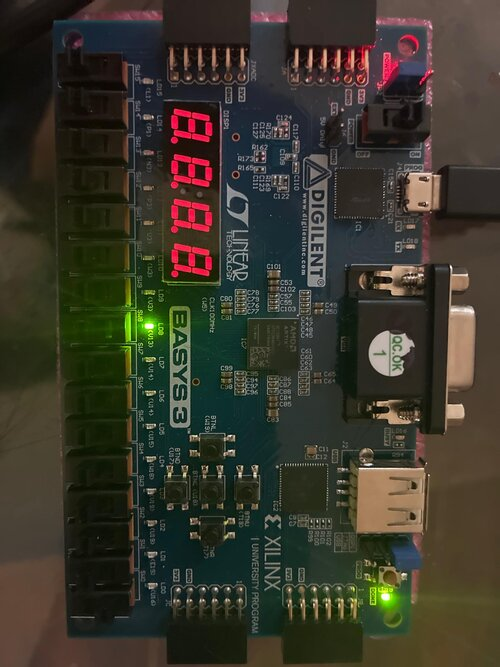
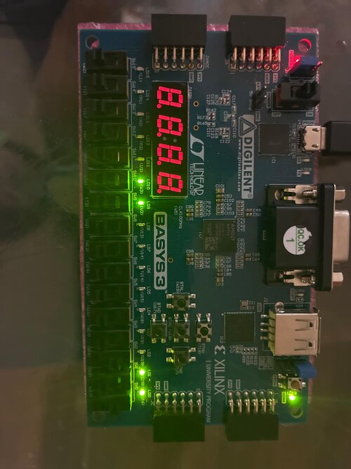
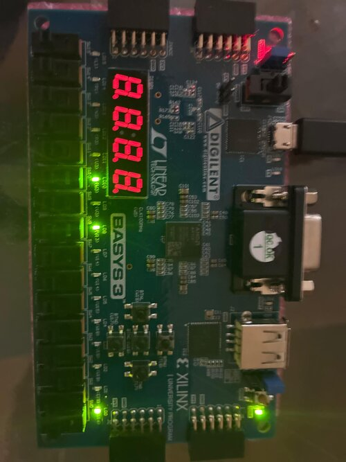
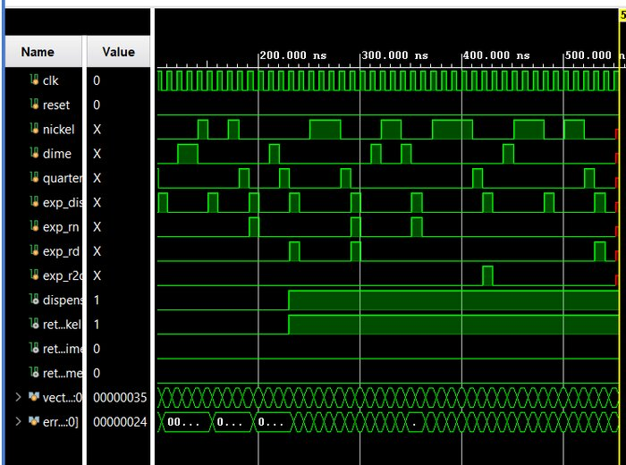
Team capstone-style project · QA Engineer
A full-stack application that scans a restaurant receipt with OCR and automatically splits the bill across a group — by item or by percentage. I served as a QA Engineer on a 6-person team, designing and running the test plan that shaped the final bug list going into demo.
| Role | Quality Assurance Engineer (with Sakina Rahman), alongside PM, product marketing, system architecture, and development leads |
| Stack | React frontend, Node.js/Express backend, MongoDB (Mongoose) storage, Tesseract OCR for receipt scanning, JWT-based auth middleware |
| Scope | User accounts, group/event management, itemized & percentage-based bill splitting, sub-5-second response time target, 2–10+ person groups |
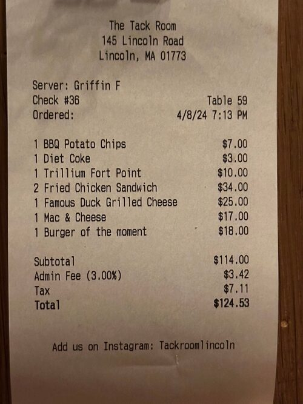
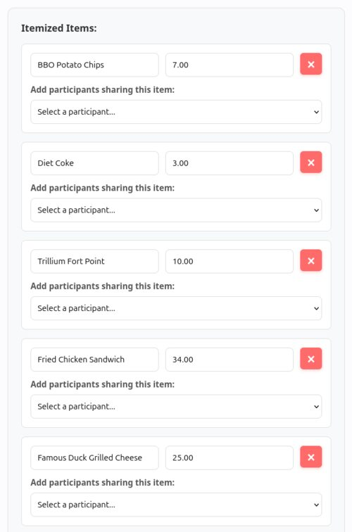
// 03 — Background
I'm a Computer Engineering student at San José State University, focused on the hardware side of the stack — FPGA development, embedded systems, and PCB design. I like projects that don't stop at a schematic: simulating in LTSpice, writing the RTL, and following it all the way to a board I've routed, fabricated, and soldered myself.
Outside coursework, I'm building toward hardware engineering internships — currently deepening my RTL skills with structured Basys 3 projects and learning KiCad PCB design from the ground up through a sensor-board build.